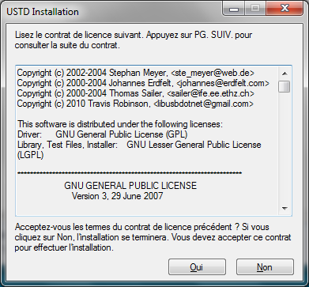
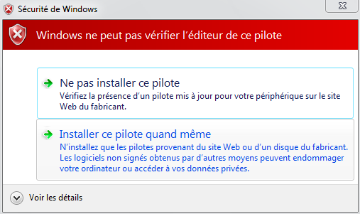

Installation
Avant de débuter l'installation, branchez la souris via un port USB.
Lancez l'installation en ouvrant le fichier setup.exe.

Une fenêtre apparaît et vous demande si vous souhaitez poursuivre l'installation,
cliquez sur Oui

Lisez le contrat, puis acceptez-le si vous reconnaissez les termes du contrat.

Il est très fortement conseillé de redémarrer son ordinateur après l'installation.

Potentielles erreurs rencontrées :

Si le message suivant apparaît, cliquez sur Installer ce pilote quand même.
Le message se présente quand le pilote d'un périphérique en cours d'installation
n'est pas connu et disponible dans la liste des drivers Windows
Créé avec HelpNDoc Personal Edition: Générateur complet de livres électroniques ePub